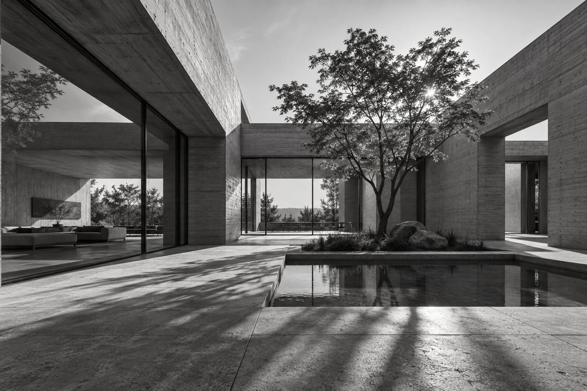

Концептуальное бюро / архитектура и среда
Свет делает
пространство.
Мы ищем точное соотношение пустоты, материала и человеческого масштаба.
Индекс проектов ↗
01 / МЕТОД
Не больше.
Точнее.
Сначала смотрим, как человек будет жить в этом месте. Потом проводим первую линию.
Свет и тень. Открытость и укрытие. Материал, который не теряет характер со временем. Каждый проект начинается с этих отношений.
Рассмотреть концепции ↗